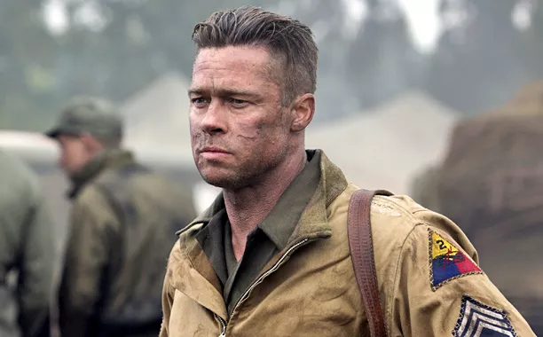

Personagens Principais
Don "Wardaddy" Collier
Interpretado por Brad Pitt, Collier é o líder destemido da tripulação do tanque, conhecido por sua determinação e frieza em combate. Ele carrega o peso de comandar seus homens em missões quase suicidas, enquanto luta contra seus próprios demônios.
Boyd "Bible" Swan
Interpretado por Shia LaBeouf, Swan é o artilheiro do tanque, um homem profundamente religioso que encontra consolo nas escrituras enquanto participa de combates brutais.

Norman Ellison
Logan Lerman interpreta Norman, um jovem recruta inexperiente que é forçado a enfrentar a brutalidade da guerra sob a tutela de Wardaddy. Ele passa de um civil inocente a um soldado endurecido.
Grady "Coon-Ass" Travis
Grady, interpretado por Jon Bernthal, é conhecido por sua maneira grosseira e sem filtro. Apesar de seu comportamento hostil, ele é incrivelmente leal à sua equipe e faria qualquer coisa por seus companheiros.
Trini "Gordo" Garcia
Michael Peña interpreta "Gordo", o motorista do tanque, que usa o humor para lidar com o estresse da guerra, mas também carrega uma carga emocional profunda, refletida em momentos de vulnerabilidade.